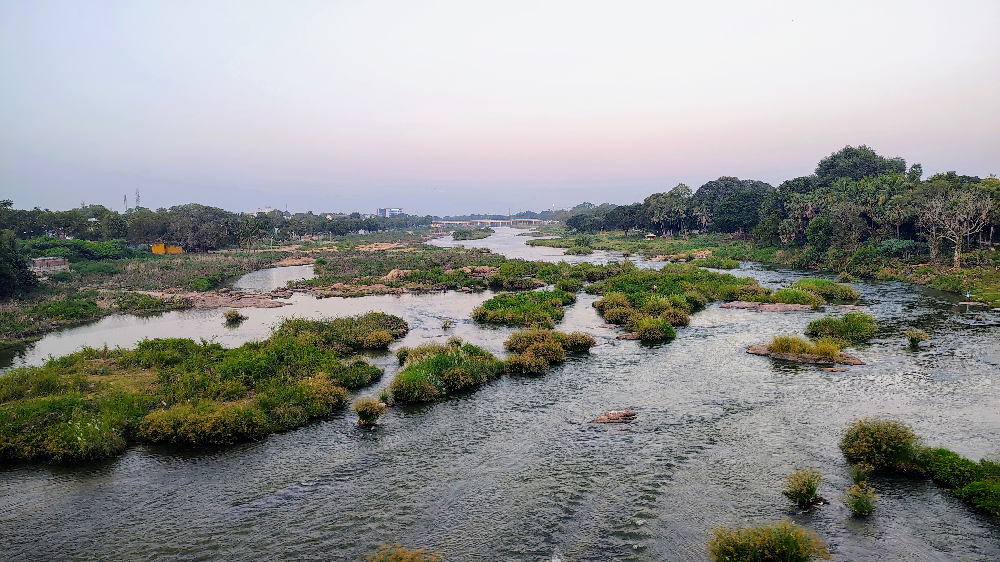
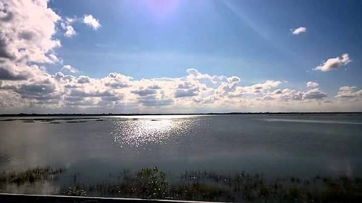
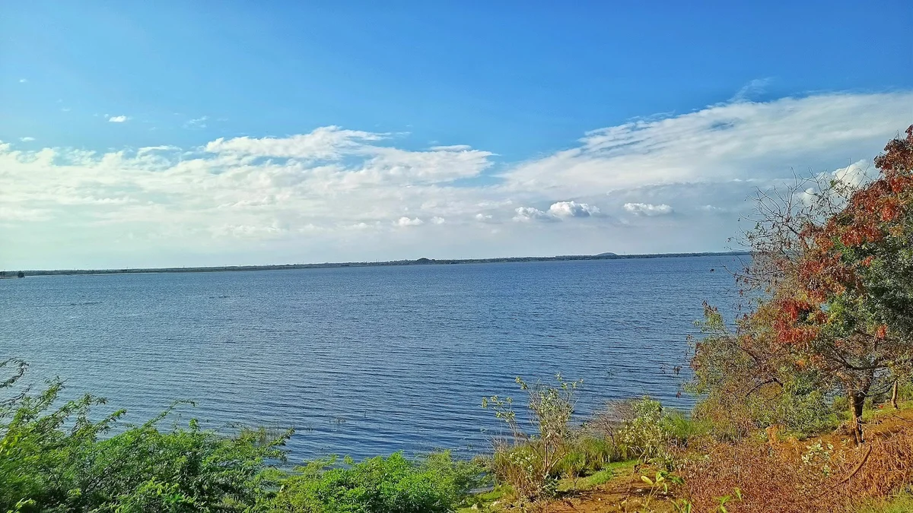
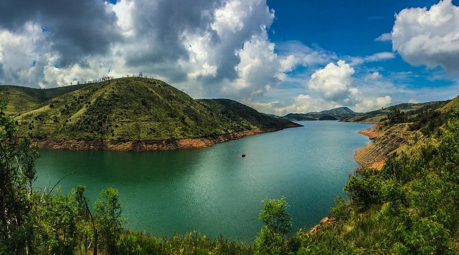
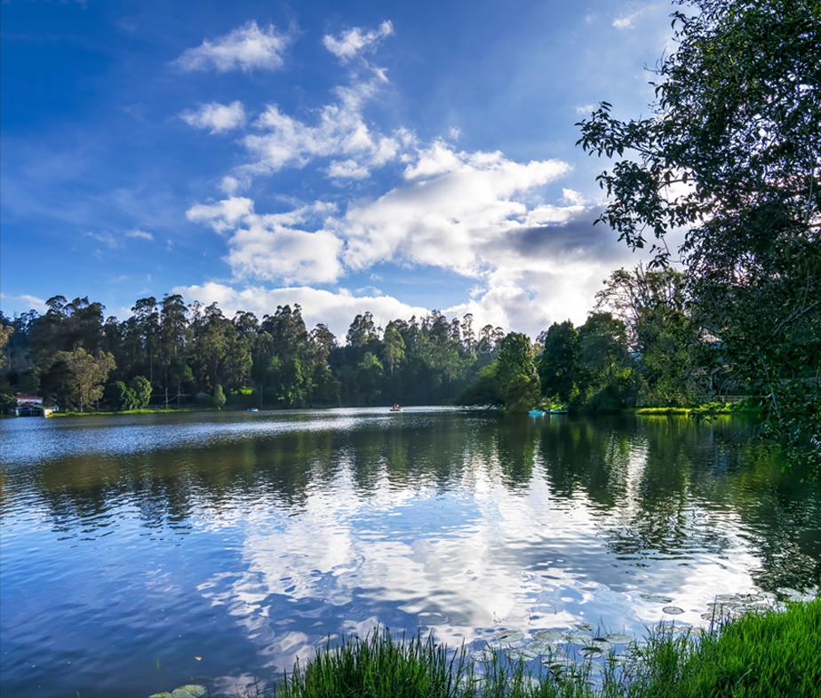

தமிழ்நாட்டின் நீர்வள அமைப்பில் ஏரிகள், குளங்கள், கண்மாய்கள், நீர்த்தேக்கங்கள் மற்றும் பிற நீர்நிலைகள் முக்கிய பங்கு வகிக்கின்றன. மழைக்காலங்களில் கிடைக்கும் நீரைச் சேமித்து, வறட்சி காலங்களில் குடிநீர், விவசாயம் மற்றும் பிற தேவைகளுக்குப் பயன்படுத்துவதற்கு இவை உதவுகின்றன.
இந்திய ஒன்றிய அரசின் ஜல் சக்தி அமைச்சகம் நடத்திய முதல் தேசிய நீர்நிலைகள் கணக்கெடுப்பின்படி, தமிழ்நாட்டில் 13,629 நீர்நிலைகள் பதிவாகியுள்ளன. இந்த எண்ணிக்கையில் ஏரிகள் மட்டுமல்லாமல், குளங்கள், கண்மாய்கள், நீர்த்தேக்கங்கள் மற்றும் பல்வேறு வகையான நீர்நிலைகளும் அடங்கும்.
தமிழ்நாட்டின் நீர்நிலைகள் குடிநீர், பாசனம், நிலத்தடி நீர் நிரப்பு, மீன்வளம், சுற்றுச்சூழல் பாதுகாப்பு மற்றும் சுற்றுலா ஆகியவற்றில் முக்கிய பங்கு வகிக்கின்றன.
பல பெரிய ஏரிகள் மற்றும் நீர்த்தேக்கங்கள் நகரங்கள் மற்றும் கிராமங்களுக்கான குடிநீர் ஆதாரமாக உள்ளன. சென்னையின் குடிநீர் தேவையில் புழல், பூண்டி, சோழவரம் மற்றும் செம்பரம்பாக்கம் போன்ற நீர்த்தேக்கங்கள் முக்கிய பங்கு வகிக்கின்றன.
ஏரிகள் மற்றும் கண்மாய்களில் சேமிக்கப்படும் நீர் விவசாய நிலங்களுக்கு பாசனமாகப் பயன்படுத்தப்படுகிறது. குறிப்பாக மழை சார்ந்த விவசாயப் பகுதிகளில் இவை மிகவும் முக்கியமான நீராதாரங்களாக உள்ளன.
மழைக்காலங்களில் கிடைக்கும் அதிகப்படியான நீரைச் சேமிப்பதன் மூலம் நீர்நிலைகள் வறட்சி காலங்களில் நீர் பற்றாக்குறையை குறைக்க உதவுகின்றன.
ஏரிகள் மற்றும் குளங்களில் தேங்கும் நீரின் ஒரு பகுதி நிலத்திற்குள் ஊடுருவி நிலத்தடி நீரை நிரப்ப உதவுகிறது.
கடலோர ஏரிகள், கழிமுகங்கள் மற்றும் ஈரநிலங்கள் பல்வேறு நீர்ப்பறவைகள் மற்றும் பிற உயிரினங்களுக்கு முக்கியமான வாழிடங்களாக உள்ளன.
ஊட்டி ஏரி, கொடைக்கானல் ஏரி, ஏற்காடு ஏரி போன்ற நீர்நிலைகள் சுற்றுலாப் பயணிகளை ஈர்க்கும் முக்கிய இடங்களாக உள்ளன.

வீராணம் ஏரி தமிழ்நாட்டின் மிக முக்கியமான வரலாற்றுச் சிறப்புமிக்க நீர்நிலைகளில் ஒன்றாகும். சோழர் காலத்துடன் தொடர்புடைய இந்தப் பெரிய நீர்த்தேக்கம் கடலூர் மாவட்டத்தில் அமைந்துள்ளது. இது பாசனத்திற்கும், சென்னை நகரின் குடிநீர் தேவைக்கும் முக்கியமான நீராதாரமாகப் பயன்படுத்தப்படுகிறது. சுமார் 14 கிலோமீட்டர் நீளமுடைய இந்த ஏரி தமிழ்நாட்டின் பாரம்பரிய நீர் மேலாண்மையின் சிறந்த எடுத்துக்காட்டாகும்.

பழவேற்காடு ஏரி தமிழ்நாடு மற்றும் ஆந்திரப் பிரதேச எல்லையில் அமைந்துள்ள மிகப்பெரிய கடலோர நீர்நிலைகளில் ஒன்றாகும். இது உவர்நீர் மற்றும் கடல்நீருடன் தொடர்புடைய தனித்துவமான ஈரநிலச் சூழலைக் கொண்டுள்ளது. பல வகையான நீர்ப்பறவைகள் மற்றும் வலசைப் பறவைகள் இப்பகுதிக்கு வருவதால் சுற்றுச்சூழல் மற்றும் பறவைகள் பாதுகாப்பில் முக்கியத்துவம் பெற்றுள்ளது. (*குறிப்பு: பழவேற்காடு ஏரி இரண்டு மாநிலங்களிலும் பரவியுள்ளது).

மதுராந்தகம் ஏரி செங்கல்பட்டு மாவட்டத்தில் அமைந்துள்ள வரலாற்றுச் சிறப்புமிக்க பெரிய ஏரியாகும். இது பாரம்பரிய நீர் சேமிப்பு மற்றும் பாசன அமைப்பின் முக்கிய எடுத்துக்காட்டாகும். ஏரியில் சேமிக்கப்படும் நீர் சுற்றியுள்ள விவசாய நிலங்களுக்குப் பயன்படுகிறது. மதுராந்தகம் ஏரி அதன் நீர்ப்பிடிப்பு பகுதி மற்றும் விவசாயப் பயன்பாட்டால் உள்ளூர் மக்களின் வாழ்வில் முக்கிய பங்கு வகிக்கிறது.

ஊட்டி ஏரி நீலகிரி மாவட்டத்தில் உள்ள புகழ்பெற்ற சுற்றுலா நீர்நிலையாகும். ஊட்டியின் குளிர்ந்த மலைச் சூழலுடன் இணைந்து அமைந்துள்ள இந்த ஏரி படகு சவாரி மற்றும் சுற்றுலா நடவடிக்கைகளுக்குப் பிரபலமானது. மலைப்பகுதியின் இயற்கை அழகை மேலும் சிறப்பிக்கும் முக்கிய இடமாக இது விளங்குகிறது.

கொடைக்கானல் ஏரி தமிழ்நாட்டின் மிகவும் புகழ்பெற்ற மலைப்பகுதி ஏரிகளில் ஒன்றாகும். கொடைக்கானல் நகரத்தின் மையப்பகுதியில் அமைந்துள்ள இந்த நட்சத்திர வடிவ ஏரி சுற்றுலாப் பயணிகளின் முக்கிய ஈர்ப்பாக உள்ளது. ஏரியைச் சுற்றியுள்ள இயற்கைச் சூழல் மற்றும் குளிர்ந்த காலநிலை கொடைக்கானலின் சுற்றுலா முக்கியத்துவத்தை அதிகரிக்கின்றன.

செம்பரம்பாக்கம் ஏரி சென்னை நகரின் முக்கிய குடிநீர் ஆதாரங்களில் ஒன்றாகும். மழைக்காலங்களில் நீரைச் சேமித்து, சென்னை மற்றும் அதன் சுற்றுப்புறங்களின் நீர்வள மேலாண்மையில் இது முக்கிய பங்கு வகிக்கிறது. சென்னை நகரத்தின் நீர் பாதுகாப்பில் முக்கியமான நீர்த்தேக்கங்களில் இதுவும் ஒன்றாகும்.
| நீர்நிலை | மாவட்டம் / பகுதி | வகை | முக்கிய சிறப்பு |
|---|---|---|---|
| வீராணம் ஏரி | கடலூர் | பாசன ஏரி / நீர்த்தேக்கம் | சோழர் காலம், குடிநீர் மற்றும் பாசனம் |
| பழவேற்காடு ஏரி | திருவள்ளூர் / ஆந்திர எல்லை | உவர்நீர் ஏரி | வலசைப் பறவைகள், ஈரநிலம் |
| மதுராந்தகம் ஏரி | செங்கல்பட்டு | பாசன ஏரி | விவசாயம், வரலாற்றுச் சிறப்பு |
| ஊட்டி ஏரி | நீலகிரி | மலைப்பகுதி ஏரி | சுற்றுலா, படகு சவாரி |
| கொடைக்கானல் ஏரி | திண்டுக்கல் | மலைப்பகுதி ஏரி | சுற்றுலா, இயற்கை அழகு |
| செம்பரம்பாக்கம் ஏரி | சென்னை சுற்றுப்பகுதி | நீர்த்தேக்கம் | சென்னை குடிநீர் |
| புழல் ஏரி | திருவள்ளூர் | நீர்த்தேக்கம் | சென்னை குடிநீர் |
| பூண்டி நீர்த்தேக்கம் | திருவள்ளூர் | நீர்த்தேக்கம் | சென்னை குடிநீர் |
| சோழவரம் ஏரி | திருவள்ளூர் | நீர்த்தேக்கம் | சென்னை நீர்வளம் |
| ஏற்காடு ஏரி | சேலம் | மலைப்பகுதி ஏரி | சுற்றுலா, படகு சவாரி |
“ஒரு ஏரி என்பது வெறும் நீரைத் தேக்கும் இடமல்ல; அது ஒரு கிராமத்தின் விவசாயத்தையும், ஒரு நகரத்தின் குடிநீரையும், ஒரு சூழலின் உயிரையும் தாங்கி நிற்கும் இயற்கையின் சேமிப்பகம்.”